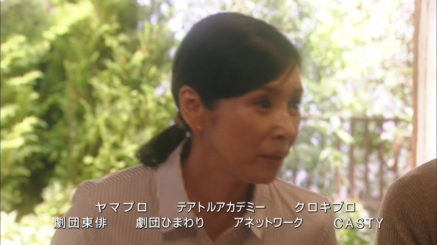
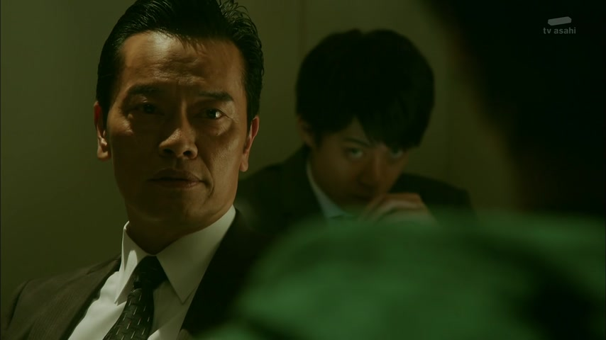

どう・いかが
| Polite | どうですか everyday polite いかがですか extra polite, for offers |
|---|---|
| Casual | どう |
Same meaning: "how, how about". Only the politeness changes.

Shirokuma Cafe · Season 1, Episode 5
どうしたの？何か考え事？
"What's wrong? Thinking about something?"
どう means "how" or "how about". It asks what something is like or how it went, not for a thing or a place.
On this card, どうした = "how did it go, what happened (to you)". It's the go-to line when someone looks off.
Polite: どうしましたか？ いかが is an extra polite どう, mostly for offers: コーヒーはいかがですか？
Examples
Your friend tries the ramen you recommended.
味はどう？
"How does it taste?"
CasualA teacher asks a new student.
日本の生活はどうですか？
"How's life in Japan?"
PoliteA café staff member, holding a jug.
お水はいかがですか？
"Would you like some water?"
いかが = very polite どう. Staff use it to offer things.
PolitePlanning to meet up.
明日はどう？
"How about tomorrow?"
どう also suggests something: "how about ___?"
CasualWith and without
何を見た？
"What did you watch?" Asks for a thing.
映画はどうだった？
"How was the movie?" Asks what it was like.
Sentence mining

YouTube · video
どうやってその大変な時悲しい時を乗り越えましたか
"How did you get through those hard, sad times?"
どうやって = "how, in what way". It asks for the method.

Shirokuma Cafe · Episode 22
駅前でポケットティッシュと一緒に配るのはどうでしょう？
"How about handing them out with pocket tissues in front of the station?"
どうでしょう = a soft, polite "how about ___?" for suggesting an idea.

Overprotected Kahoko · Episode 7
どういう意味？
"What do you mean?"
どう + いう ("say") + 意味 ("meaning") = "what do you mean?". どういう + noun = "what kind of".

Border · Episode 1
どうだ？
"Well? How is it?"
どう + だ: a rough, casual "how is it?", waiting for a reaction.
The Journalist · Episode 2
どうした？
"What's wrong?"
どう + した ("did") = "what happened?", the usual way to ask "what's wrong?".
Howl's Moving Castle
さぁ、どうする？
"So, what'll it be?"
どう + する ("do") = "what will you do?". さぁ: "so, well then".
Weakest Beast · Episode 8
どうしたの？
"What's wrong?"
どうしたの: "what happened (to you)?".
Reference
A Dictionary of Basic Japanese Grammar
Entry "dō" · pp. 114–115